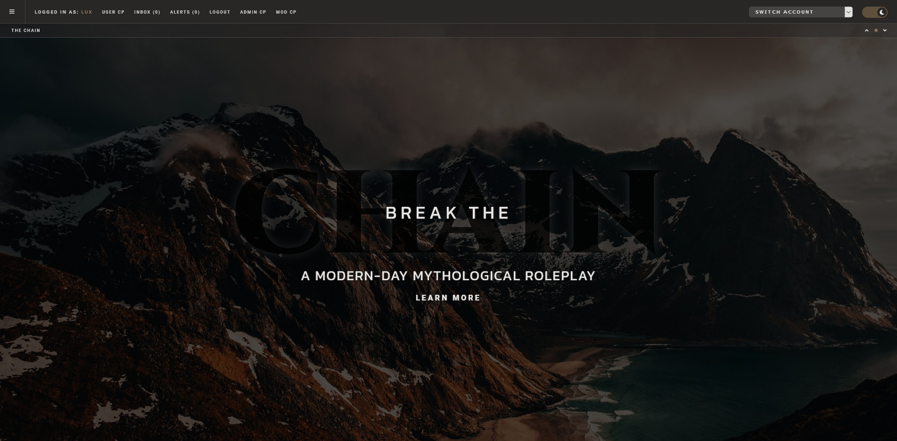
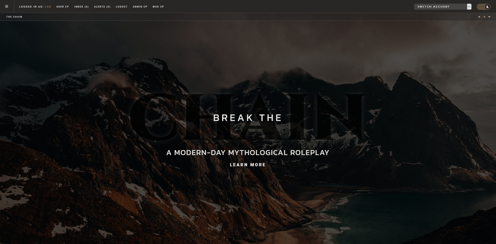

Break the Chain — Fall 2020
A forum skin for a writing site hosted on the JCink forum host. Started and completed in September 2020. Site is currently live and can be viewed here.
Requirements
- Minimum font size of 12px with large font mode available
- Character profiles located in the account's main profile
- A set of matching posting templates
- Fitting of a site set in the Canadian Rocky Mountains
- A guidebook to contain linkable tabs for site information
- A different presentation for a member profile vs a character profile
Features
- Skin accents change color based on member group of the viewer
- Profile, post row, and template accents change color based on the associated account
- Main profile and guidebook are adaptable to the height of the screen so that all scrolling is self-contained
- Main areas accessed on the forum via mobile are mobile-adaptive
- Light/dark toggle with localStorage memory for members with frequent migraines
Gallery
 

This skin featured both light and dark modes. Light mode only is visible in the screenshots, but both can be seen by any guest viewer on-site.